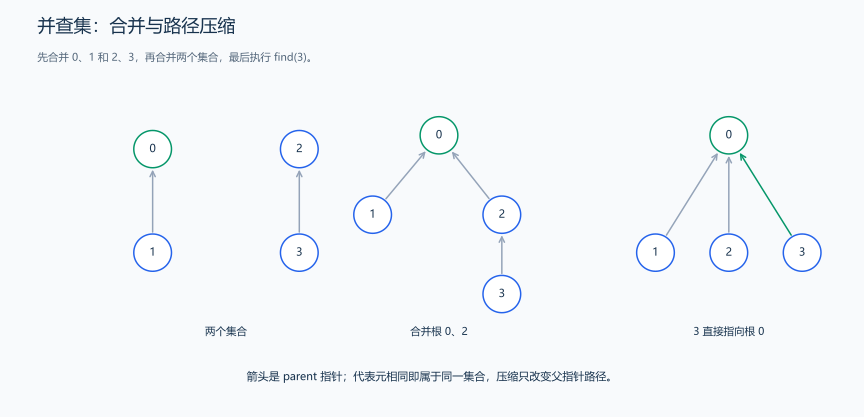
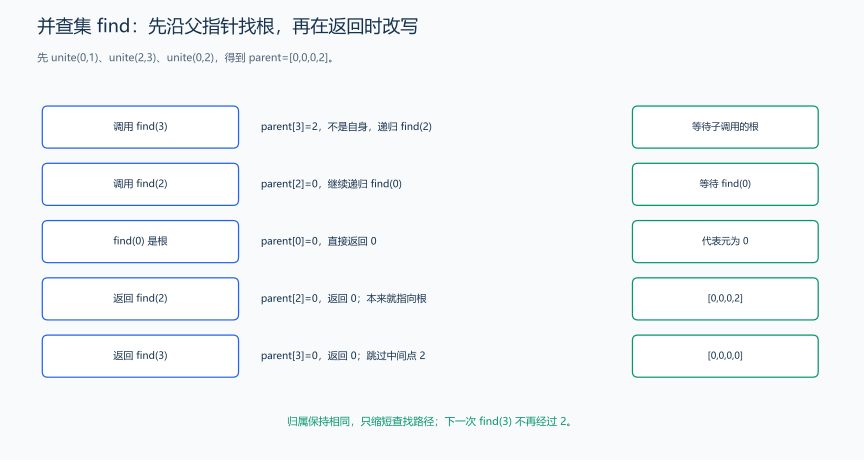

（十四） 并查集
如果题目不断连接两个对象，并询问它们是否已经属于同一组，目标是维护合并关系。先观察两次合并怎样改变组，再推导父指针与查找代表的方法。
并查集维护一些不相交的集合，支持“查找元素属于哪个集合”和“合并两个集合”。常用于连通性查询。
题目原文（自拟示例）： 初始有 n >= 1 个独立元素，编号为 0 到 n-1。操作 1 a b 合并 a、b 所在集合；操作 2 a b 查询它们是否在同一集合，输出 YES 或 NO。第一行输入 n q，随后输入 q 条操作，所有编号合法。
思路分析： 每个集合用一棵父指针树表示，根为代表元。查找时压缩路径，合并时把较小的树接到较大的树上。

图中箭头从元素指向父节点。find(3) 之后代表元不变，只把中间路径缩短。

合并 (0,1)、(2,3)、(0,2) 后，父数组为 [0,0,0,2]。find(3) 先调用 find(2)，再到根 0；返回 2 的那层执行 parent[2]=0，返回 3 的那层执行 parent[3]=0，得到 [0,0,0,0]。压缩发生在得到根之后的返回阶段，不会把原图新增一条边，也不会改变集合归属。
父指针表示集合归属，不表示原图中的边。 初始化时 parent[x]=x，每个元素自己是一个集合。顺着父指针走到 parent[root]=root 的位置，得到代表元；两个元素找到同一个代表元，就属于同一集合。
合并时先用 find 找到两个集合的根，再把小集合的根接到大集合的根。旧根下的整棵树随之连接，两组元素得到同一个代表。按大小合并时，size_ 在根处保存整个集合的大小；新根累计两组大小，之后查找都以新根表示合并后的集合。
样例先合并 0、1，集合为 {0,1}、{2}、{3}，所以 0、2 不连通。再合并 1、2 时，实际上合并的是 {0,1} 的根和 {2} 的根，结果为 {0,1,2}、{3}，此后 0、2 连通。
路径压缩把某条查找路径上的节点直接指向同一个根，没有改变任何节点所属集合，只减少后续查找的路径长度。普通并查集只记录“在不在同一集合”，不能由父指针恢复原图路径，也不能直接删除一条边后撤销所有连通影响。
#include <algorithm>
#include <iostream>
#include <numeric>
#include <vector>
using namespace std;
class DisjointSet {
private:
vector<int> parent_;
vector<int> size_;
public:
explicit DisjointSet(int n) : parent_(n), size_(n, 1) {
iota(parent_.begin(), parent_.end(), 0);
}
int find(int x) {
if (parent_[x] != x) {
// 路径压缩：让访问路径上的元素直接连接代表元。
parent_[x] = find(parent_[x]);
}
return parent_[x];
}
bool unite(int a, int b) {
a = find(a);
b = find(b);
if (a == b) {
return false;
}
if (size_[a] < size_[b]) {
swap(a, b);
}
// 把较小集合接到较大集合，控制树的高度。
parent_[b] = a;
size_[a] += size_[b];
return true;
}
bool same(int a, int b) {
return find(a) == find(b);
}
};
int main() {
int n, q;
cin >> n >> q;
DisjointSet sets(n);
while (q--) {
int operation, a, b;
cin >> operation >> a >> b;
if (operation == 1) {
sets.unite(a, b);
} else {
cout << (sets.same(a, b) ? "YES" : "NO") << '\n';
}
}
}输入：
4 4
1 0 1
2 0 2
1 1 2
2 0 2输出：
NO
YES代码解释： find 返回代表元；unite 返回是否进行了新合并。两个元素的代表元相同，即属于同一集合。初始化 \(O(n)\)，结合两种优化后，每次操作的均摊复杂度为 \(O(\alpha(n))\)，其中 \(\alpha\) 是反阿克曼函数；额外空间 \(O(n)\)。
普通并查集不直接支持拆开集合，也不保存两点之间的具体路径。
练习题： 洛谷 P3367 — 并查集、洛谷 P1551 — 亲戚。